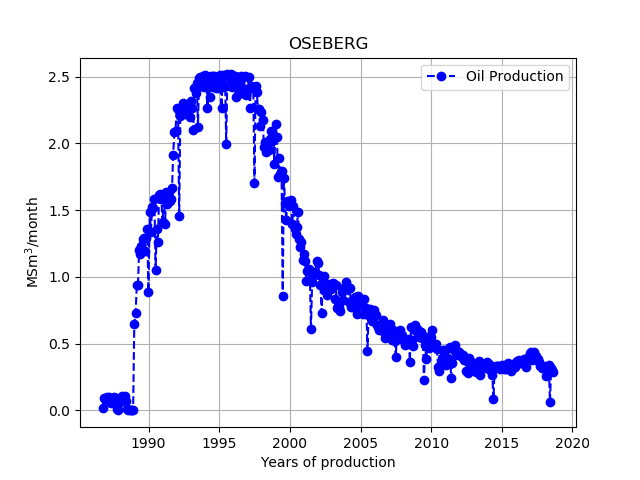

Solution1:
import matplotlib.pyplot as plt
plt.plot(years,oe)
Solution2:
Here we need to loop over all elements and for each year add the month, divided by 12 to convert the month to year. What we want is
year_month=[]We loop over elements using a for loop. The keyword for is always accompanied by the in keyword.
Method 1:
If you have coded before, this might be very familiar.
N=len(years) # N is the length of the years list
year_month=[]
for i in range(N):
year_month.append(years[i]+months[i]/12)
The for-loop above ends with :, and then Python uses indentation (a tab) to indicate a block of code. You have to use the same amount of spaces in the same block of code. The following code will give an error.
for i in range(N):
year_month.append(years[i]+months[i]/12)#Error!! because no indentation
The statement range(N) is a generator and it generates a sequence of integers with length \( N \), starting from zero to \( N-1 \).
Method2:
This method is slightly more pythonic, than the previous. Instead of accessing the different elements in years by years[i], we can loop directly over them
i=0
for year in years:
year_month.append(year+months[i]/12)
i = i+1
The specific name we give the counter, year, is not important for the computer. But if you choose a descriptive name it makes the code easier to read for humans.
The code above is ok, but it seems unnecessary to introduce the extra counter i, the way that we have done it. To access the index of each element in addition to the value, we can use the enumerate() function
for i,year in enumerate(years):
year_month.append(year+months[i]/12)
Method3:
If you have lists of the same length we can access the elements in a loop using the zip function
for month,year in zip(months,years):
year_month.append(year+month/12)
The zip function uses a nice feature in Python, which is called variable unpacking. This is a special assignment operation, where we can assign all variables in a an iterable object in one go e.g.
my_list=[2024,1,9]
year,month,day=my_list #year=2024,month=1,day=9
Method4:
*List comprehension* is a very pythonic way of creating new lists. It allows us to write a for loop while creating a python list.
year_month = [year+month/12 for month,year in zip(months,years)]
year_month=np.array(year)+np.array(month)/12 and create a new plot, with year_month on the x-axis.As we have seen year_month=year+month/12 will not work for lists as Python does not understand what month/12 is, and even if it did the + operation would not give the expected results. But, if we convert our list to a Numpy array, life becomes easy. To convert a list to a Numpy array, we use what programmers calls *casting*. Casting is when we tell the computer to convert a variable from one type to another, e.g.
my_list=[1,2,3]
my_np_array=np.array(my_list) # cast to array
# more examples
a='1' # a is a string
b='2' # b is a string
a+b # gives a new string '12'
int(a)+int(b) # gives integer 3
float(a)+float(b) # gives float 3.0
One of the major strengths of Numpy is that it is vectorized. This means that mathematical operations you do with numbers such as +, -, /, *, you can also do with Numpy arrays with the effect that the operation is done on each element. This only works if the arrays have the same length. The only exception is if one of the elements is a single number, e.g.
# will divide all elements in month by 12
np.array(months)/12
# add first element in year with first element in month/12 and so on
np.array(years)+np.array(months)/12
year_month=np.array(years)+np.array(months)/12 and create a new plot, with year_month on the x-axis.Figure 17: Production of oil equivalents on the Draugen vs time.
